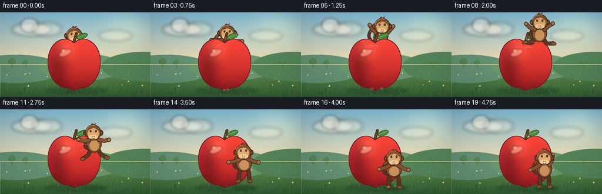
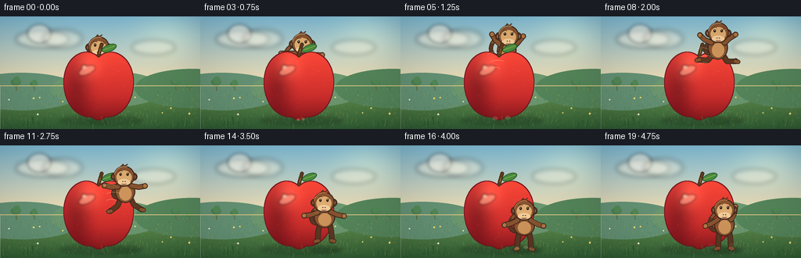
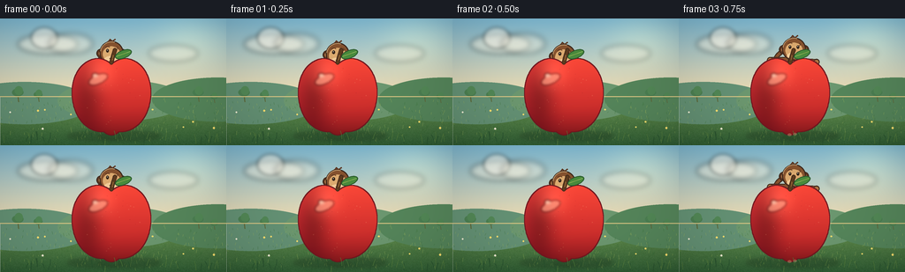

CODING AGENTS AS PIXEL WORLD MODELS
traex/DeepSeek-V4.1-Flash · dynamic_spatial_relationship_0054
点击播放 · 原生 RGB 像素
逐轮保存的候选
回放视频、检查图与代码变化。
每份候选均可单独播放。实际图片检查记录在下方工具轨迹中。
候选 01播放与检查图
点击播放 · 原生 RGB 像素

展开代码变化
--- 上一保存版本
+++ 本次保存版本
@@ -0,0 +1,557 @@
+from pathlib import Path
+import math
+
+import numpy as np
+from PIL import Image, ImageDraw, ImageFilter
+
+import artifact_io
+
+
+WIDTH = 256
+HEIGHT = 144
+FRAMES = 20
+FPS = 4.0
+SS = 4
+RW = WIDTH * SS
+RH = HEIGHT * SS
+
+APPLE_CX = 126.0
+APPLE_TOP = 44.0
+APPLE_BOTTOM = 133.0
+APPLE_RX = 45.0
+APPLE_RY = 44.5
+
+OUTLINE = (58, 38, 28, 255)
+FUR = (133, 82, 47, 255)
+FUR_DARK = (91, 54, 34, 255)
+FUR_LIGHT = (173, 116, 68, 255)
+FACE = (220, 171, 113, 255)
+MUZZLE = (241, 204, 153, 255)
+
+
+def p(value):
+ return int(round(value * SS))
+
+
+def smoothstep(t):
+ t = max(0.0, min(1.0, t))
+ return t * t * (3.0 - 2.0 * t)
+
+
+def lerp(a, b, t):
+ return a + (b - a) * t
+
+
+def mix_color(a, b, t):
+ return tuple(int(round(lerp(x, y, t))) for x, y in zip(a, b))
+
+
+def bezier_points(points, samples=90):
+ pts = np.asarray(points, dtype=np.float64)
+ result = []
+ for i in range(len(pts) - 1):
+ p0 = pts[i]
+ p1 = pts[i + 1]
+ for j in range(samples):
+ t = j / samples
+ result.append((1 - t) * p0 + t * p1)
+ result.append(pts[-1])
+ return [tuple(v) for v in result]
+
+
+def cubic_points(p0, p1, p2, p3, samples=70):
+ out = []
+ for i in range(samples + 1):
+ t = i / samples
+ u = 1.0 - t
+ x = u**3 * p0[0] + 3 * u * u * t * p1[0] + 3 * u * t * t * p2[0] + t**3 * p3[0]
+ y = u**3 * p0[1] + 3 * u * u * t * p1[1] + 3 * u * t * t * p2[1] + t**3 * p3[1]
+ out.append((x, y))
+ return out
+
+
+def scaled_points(points):
+ return [(p(x), p(y)) for x, y in points]
+
+
+def rotated_ellipse_points(cx, cy, rx, ry, angle_deg, samples=64):
+ a = math.radians(angle_deg)
+ ca, sa = math.cos(a), math.sin(a)
+ points = []
+ for i in range(samples):
+ t = 2 * math.pi * i / samples
+ x = rx * math.cos(t)
+ y = ry * math.sin(t)
+ points.append((cx + ca * x - sa * y, cy + sa * x + ca * y))
+ return points
+
+
+def soft_ellipse(layer, box, color, blur):
+ temp = Image.new("RGBA", layer.size, (0, 0, 0, 0))
+ d = ImageDraw.Draw(temp)
+ d.ellipse(tuple(p(v) for v in box), fill=color)
+ temp = temp.filter(ImageFilter.GaussianBlur(max(0.1, blur * SS)))
+ layer.alpha_composite(temp)
+
+
+def thick_line(draw, points, width, fill, outline=None, outline_extra=1.2):
+ pts = scaled_points(points)
+ if len(pts) < 2:
+ return
+ if outline is not None:
+ ow = max(1, p(width + outline_extra * 2))
+ draw.line(pts, fill=outline, width=ow, joint="curve")
+ r = ow / 2
+ for x, y in (pts[0], pts[-1]):
+ draw.ellipse((x - r, y - r, x + r, y + r), fill=outline)
+ fw = max(1, p(width))
+ draw.line(pts, fill=fill, width=fw, joint="curve")
+ r = fw / 2
+ for x, y in (pts[0], pts[-1]):
+ draw.ellipse((x - r, y - r, x + r, y + r), fill=fill)
+
+
+def build_background():
+ yy, xx = np.mgrid[0:RH, 0:RW]
+ xn = xx / RW
+ yn = yy / RH
+
+ top = np.array([127, 190, 218], dtype=np.float64)
+ horizon = np.array([246, 221, 174], dtype=np.float64)
+ sky_t = np.clip(yn / 0.64, 0.0, 1.0)[..., None]
+ sky = top * (1.0 - sky_t) + horizon * sky_t
+
+ sun_dx = xn - 0.84
+ sun_dy = yn - 0.17
+ glow = np.exp(-((sun_dx / 0.23) ** 2 + (sun_dy / 0.31) ** 2) * 2.1)
+ sky = sky + glow[..., None] * np.array([34, 27, 12])
+
+ grass_top = np.array([116, 158, 86], dtype=np.float64)
+ grass_bottom = np.array([43, 91, 52], dtype=np.float64)
+ grass_t = np.clip((yn - 0.56) / 0.46, 0.0, 1.0)[..., None]
+ ground = grass_top * (1.0 - grass_t) + grass_bottom * grass_t
+
+ rng = np.random.default_rng(54)
+ texture = rng.normal(0.0, 2.2, (RH // 4, RW // 4))
+ texture = np.asarray(
+ Image.fromarray(np.clip(texture + 128, 0, 255).astype(np.uint8)).resize(
+ (RW, RH), Image.Resampling.BICUBIC
+ )
+ ).astype(np.float64) - 128.0
+ ground = np.clip(ground + texture[..., None], 0, 255)
+
+ split = int(0.57 * RH)
+ bg = np.empty((RH, RW, 3), dtype=np.uint8)
+ bg[:split] = np.clip(sky[:split], 0, 255).astype(np.uint8)
+ bg[split:] = ground[split:].astype(np.uint8)
+ image = Image.fromarray(bg, "RGB").convert("RGBA")
+
+ clouds = Image.new("RGBA", (RW, RH), (0, 0, 0, 0))
+ soft_ellipse(clouds, (20, 18, 88, 40), (255, 250, 232, 115), 3.0)
+ soft_ellipse(clouds, (35, 10, 65, 34), (255, 252, 240, 130), 2.2)
+ soft_ellipse(clouds, (55, 17, 105, 40), (255, 249, 229, 100), 3.4)
+ soft_ellipse(clouds, (168, 30, 224, 49), (255, 249, 230, 80), 3.0)
+ image.alpha_composite(clouds)
+
+ d = ImageDraw.Draw(image)
+ far = (98, 145, 117, 255)
+ nearer = (83, 133, 91, 255)
+ d.ellipse((p(-50), p(72), p(105), p(120)), fill=far)
+ d.ellipse((p(65), p(70), p(210), p(116)), fill=(106, 151, 112, 255))
+ d.ellipse((p(172), p(67), p(320), p(117)), fill=nearer)
+ d.rectangle((0, p(89), RW, RH), fill=None)
+
+ # Low, soft orchard silhouettes keep the background alive without competing
+ # with the apple and monkey.
+ for tx, ty, scale in [(20, 86, 0.72), (43, 88, 0.55), (224, 86, 0.70), (242, 90, 0.48)]:
+ trunk = (91, 105, 61, 255)
+ canopy = (73, 126, 82, 255)
+ d.line(scaled_points([(tx, ty), (tx + 1, ty + 12 * scale)]), fill=trunk, width=p(1.6 * scale))
+ d.ellipse((p(tx - 9 * scale), p(ty - 9 * scale), p(tx + 9 * scale), p(ty + 3 * scale)), fill=canopy)
+ d.ellipse((p(tx - 5 * scale), p(ty - 13 * scale), p(tx + 8 * scale), p(ty + 1 * scale)), fill=(80, 135, 86, 255))
+
+ # A warm rim separates the meadow from the hills.
+ d.line(scaled_points([(0, 88.5), (256, 88.5)]), fill=(219, 199, 133, 110), width=p(1.0))
+
+ grass_rng = np.random.default_rng(194)
+ for _ in range(310):
+ gx = float(grass_rng.uniform(0, WIDTH))
+ gy = float(grass_rng.uniform(92, 143))
+ length = float(grass_rng.uniform(1.0, 4.2)) * (0.7 + (gy - 92) / 100)
+ lean = float(grass_rng.uniform(-1.1, 1.1))
+ if grass_rng.random() < 0.48:
+ color = (55, 110, 57, 180)
+ else:
+ color = (151, 179, 91, 155)
+ d.line(scaled_points([(gx, gy), (gx + lean, gy - length)]), fill=color, width=max(1, p(0.32)))
+
+ flower_rng = np.random.default_rng(731)
+ for _ in range(13):
+ fx = float(flower_rng.uniform(7, 249))
+ fy = float(flower_rng.uniform(100, 139))
+ if 82 < fx < 176 and fy > 112:
+ continue
+ radius = float(flower_rng.uniform(0.7, 1.25))
+ color = (249, 223, 111, 220) if flower_rng.random() < 0.55 else (240, 237, 213, 220)
+ d.ellipse((p(fx - radius), p(fy - radius), p(fx + radius), p(fy + radius)), fill=color)
+
+ return image.convert("RGB")
+
+
+def build_apple():
+ top = APPLE_TOP
+ bottom = APPLE_BOTTOM
+ cx = APPLE_CX
+ path = []
+ path += cubic_points((cx, top + 7), (cx - 7, top + 1), (cx - 16, top - 1), (cx - 25, top + 3))
+ path += cubic_points((cx - 25, top + 3), (cx - 39, top + 9), (cx - 46, top + 26), (cx - 45, top + 43))
+ path += cubic_points((cx - 45, top + 43), (cx - 44, top + 66), (cx - 30, top + 86), (cx - 9, bottom - 4))
+ path += cubic_points((cx - 9, bottom - 4), (cx - 3, bottom + 1), (cx + 3, bottom + 1), (cx + 9, bottom - 4))
+ path += cubic_points((cx + 9, bottom - 4), (cx + 30, top + 86), (cx + 44, top + 66), (cx + 45, top + 43))
+ path += cubic_points((cx + 45, top + 43), (cx + 46, top + 26), (cx + 39, top + 9), (cx + 25, top + 3))
+ path += cubic_points((cx + 25, top + 3), (cx + 16, top - 1), (cx + 7, top + 1), (cx, top + 7))
+
+ mask_img = Image.new("L", (RW, RH), 0)
+ md = ImageDraw.Draw(mask_img)
+ md.polygon(scaled_points(path), fill=255)
+ mask = np.asarray(mask_img) > 0
+
+ yy, xx = np.mgrid[0:RH, 0:RW]
+ lx = xx / SS
+ ly = yy / SS
+ u = (lx - cx) / APPLE_RX
+ v = (ly - (top + bottom) * 0.5) / APPLE_RY
+
+ body = np.zeros((RH, RW, 4), dtype=np.float32)
+ base = np.zeros((RH, RW, 3), dtype=np.float32)
+ base[..., 0] = 214 - 37 * np.clip(v, -1, 1) - 18 * np.clip(-u, 0, 1)
+ base[..., 1] = 51 - 20 * np.clip(v, -1, 1) - 13 * np.clip(-u, 0, 1)
+ base[..., 2] = 47 - 9 * np.clip(v, -1, 1)
+
+ left_shade = np.exp(-(((u + 0.62) / 0.38) ** 2 + ((v - 0.05) / 0.9) ** 2))
+ base *= (1.0 - 0.28 * left_shade[..., None])
+ top_light = np.exp(-(((u + 0.30) / 0.34) ** 2 + ((v + 0.55) / 0.38) ** 2))
+ base += top_light[..., None] * np.array([36, 28, 21], dtype=np.float32)
+ bottom_ao = np.clip((v - 0.20) / 0.95, 0, 1) ** 1.6
+ base *= (1.0 - 0.34 * bottom_ao[..., None])
+
+ body[..., :3] = np.clip(base, 0, 255)
+ body[..., 3] = mask.astype(np.float32) * 255
+ body_img = Image.fromarray(body.astype(np.uint8), "RGBA")
+
+ details = Image.new("RGBA", (RW, RH), (0, 0, 0, 0))
+ dd = ImageDraw.Draw(details)
+ dd.polygon(
+ scaled_points(rotated_ellipse_points(cx - 15, top + 25, 11.5, 5.2, -24)),
+ fill=(255, 172, 143, 150),
+ )
+ dd.ellipse((p(cx - 22), p(top + 18), p(cx - 15), p(top + 23)), fill=(255, 219, 189, 190))
+ details = details.filter(ImageFilter.GaussianBlur(1.4 * SS))
+ detail_mask = Image.fromarray((mask * 255).astype(np.uint8), "L")
+ details.putalpha(Image.fromarray(np.minimum(np.asarray(details.getchannel("A")), np.asarray(detail_mask)).astype(np.uint8)))
+ body_img.alpha_composite(details)
+
+ # Fine blush marks.
+ speck = Image.new("RGBA", (RW, RH), (0, 0, 0, 0))
+ sd = ImageDraw.Draw(speck)
+ rng = np.random.default_rng(881)
+ for _ in range(38):
+ angle = rng.uniform(0, 2 * math.pi)
+ radius = math.sqrt(rng.uniform(0.05, 0.82))
+ sx = cx + math.cos(angle) * APPLE_RX * radius * 0.80
+ sy = (top + bottom) * 0.5 + math.sin(angle) * APPLE_RY * radius * 0.82
+ alpha = int(rng.uniform(16, 45))
+ color = (255, 190, 139, alpha) if rng.random() < 0.7 else (99, 20, 29, alpha)
+ rr = rng.uniform(0.28, 0.62)
+ sd.ellipse((p(sx - rr), p(sy - rr), p(sx + rr), p(sy + rr)), fill=color)
+ speck.putalpha(Image.fromarray(np.minimum(np.asarray(speck.getchannel("A")), np.asarray(detail_mask)).astype(np.uint8)))
+ body_img.alpha_composite(speck)
+
+ # Crisp, dark-red contour.
+ inner = np.asarray(mask_img.filter(ImageFilter.MinFilter(9))) > 0
+ edge = mask & ~inner
+ arr = np.asarray(body_img).copy()
+ arr[edge] = (112, 23, 32, 255)
+ body_img = Image.fromarray(arr, "RGBA")
+
+ apple = body_img
+ d = ImageDraw.Draw(apple)
+ stem = [(cx, top + 6), (cx + 1.2, top + 1), (cx + 4.0, top - 8)]
+ thick_line(d, bezier_points(stem), 3.2, (91, 58, 31, 255), outline=(63, 39, 25, 255), outline_extra=0.75)
+ thick_line(d, [(cx + 1.0, top + 3), (cx + 2.1, top - 2)], 0.8, (157, 108, 54, 210))
+
+ leaf = rotated_ellipse_points(cx + 13.5, top - 3.5, 10.0, 4.7, -21)
+ d.polygon(scaled_points(leaf), fill=(71, 139, 61, 255), outline=(38, 88, 45, 255), width=p(0.9))
+ d.line(scaled_points([(cx + 5.5, top - 1.0), (cx + 21.0, top - 6.5)]), fill=(163, 194, 91, 220), width=p(0.75))
+ return apple
+
+
+def draw_monkey(root_x, root_y, frame):
+ layer = Image.new("RGBA", (RW, RH), (0, 0, 0, 0))
+ d = ImageDraw.Draw(layer)
+
+ # Key poses: anticipation, launch, airborne tuck, landing, then a small wave.
+ keys = [
+ (0, {"x": 126.0, "y": 58.0, "lean": 0.0, "squash": 1.00, "arm_l": 24, "fore_l": 22, "arm_r": 22, "fore_r": 18, "leg_l": 8, "shin_l": 2, "leg_r": 8, "shin_r": 2, "head": 0, "tail": 0}),
+ (2, {"x": 126.5, "y": 61.5, "lean": -2.0, "squash": 0.86, "arm_l": 39, "fore_l": 29, "arm_r": 38, "fore_r": 28, "leg_l": 17, "shin_l": 5, "leg_r": 17, "shin_r": 5, "head": -4, "tail": -5}),
+ (4, {"x": 132.0, "y": 46.0, "lean": 8.0, "squash": 1.10, "arm_l": 139, "fore_l": 151, "arm_r": 132, "fore_r": 145, "leg_l": 26, "shin_l": -18, "leg_r": 19, "shin_r": -24, "head": 4, "tail": -12}),
+ (7, {"x": 146.0, "y": 31.0, "lean": 3.0, "squash": 1.02, "arm_l": 121, "fore_l": 143, "arm_r": 151, "fore_r": 126, "leg_l": 47, "shin_l": 105, "leg_r": 35, "shin_r": 96, "head": 2, "tail": 15}),
+ (10, {"x": 160.0, "y": 48.0, "lean": -4.0, "squash": 1.03, "arm_l": 91, "fore_l": 111, "arm_r": 84, "fore_r": 107, "leg_l": 25, "shin_l": 72, "leg_r": 33, "shin_r": 78, "head": -2, "tail": 21}),
+ (13, {"x": 159.0, "y": 88.0, "lean": -3.0, "squash": 0.93, "arm_l": 73, "fore_l": 87, "arm_r": 68, "fore_r": 83, "leg_l": 14, "shin_l": 3, "leg_r": 12, "shin_r": 4, "head": -1, "tail": 8}),
+ (16, {"x": 158.0, "y": 102.0, "lean": 0.0, "squash": 0.89, "arm_l": 64, "fore_l": 77, "arm_r": 60, "fore_r": 73, "leg_l": 12, "shin_l": 2, "leg_r": 11, "shin_r": 3, "head": 1, "tail": 0}),
+ (19, {"x": 158.0, "y": 101.0, "lean": 0.0, "squash": 1.00, "arm_l": 58, "fore_l": 67, "arm_r": 153, "fore_r": 171, "leg_l": 8, "shin_l": 2, "leg_r": 8, "shin_r": 2, "head": 2, "tail": -2}),
+ ]
+ if frame <= keys[0][0]:
+ pose = dict(keys[0][1])
+ elif frame >= keys[-1][0]:
+ pose = dict(keys[-1][1])
+ else:
+ for i in range(len(keys) - 1):
+ f0, a = keys[i]
+ f1, b = keys[i + 1]
+ if f0 <= frame <= f1:
+ t = smoothstep((frame - f0) / (f1 - f0))
+ pose = {k: lerp(a[k], b[k], t) for k in a}
+ break
+
+ # Small secondary bounce keeps the settled pose alive.
+ if frame >= 16:
+ settle = smoothstep((frame - 16) / 3.0)
+ pose["y"] += math.sin(settle * math.pi * 2.0) * 0.7
+ pose["tail"] += math.sin(settle * math.pi * 2.0) * 6.0
+
+ x = pose["x"]
+ y = pose["y"]
+ lean = math.radians(pose["lean"])
+ ca, sa = math.cos(lean), math.sin(lean)
+ squash = pose["squash"]
+
+ def local(px, py):
+ return (x + ca * px - sa * py, y + sa * px + ca * py)
+
+ hip_l = local(-6.2, 8.8)
+ hip_r = local(6.2, 8.8)
+ shoulder_l = local(-8.6, -6.2)
+ shoulder_r = local(8.6, -6.2)
+
+ def joint_chain(start, a1, a2, mirror=1.0, upper=9.2, lower=8.5):
+ a1r = math.radians(a1)
+ a2r = math.radians(a2)
+ elbow = (start[0] + mirror * math.sin(a1r) * upper, start[1] + math.cos(a1r) * upper)
+ hand = (elbow[0] + mirror * math.sin(a2r) * lower, elbow[1] + math.cos(a2r) * lower)
+ return elbow, hand
+
+ elbow_l, hand_l = joint_chain(shoulder_l, pose["arm_l"], pose["fore_l"], mirror=-1.0)
+ elbow_r, hand_r = joint_chain(shoulder_r, pose["arm_r"], pose["fore_r"], mirror=1.0)
+ knee_l, foot_l = joint_chain(hip_l, pose["leg_l"], pose["shin_l"], mirror=-1.0, upper=10.5, lower=11.0)
+ knee_r, foot_r = joint_chain(hip_r, pose["leg_r"], pose["shin_r"], mirror=1.0, upper=10.5, lower=11.0)
+
+ # Tail is behind the body, with a readable curl when the monkey lands.
+ tail_start = local(-5.0, 7.0)
+ wag = pose["tail"]
+ tail_path = cubic_points(
+ tail_start,
+ (tail_start[0] - 15.0, tail_start[1] + 5.0),
+ (tail_start[0] - 18.0 + wag * 0.22, tail_start[1] - 13.0),
+ (tail_start[0] - 5.0 + wag * 0.55, tail_start[1] - 21.0),
+ )
+ thick_line(d, tail_path, 3.8, FUR_DARK, outline=OUTLINE, outline_extra=0.8)
+ thick_line(d, tail_path[-12:], 2.7, FUR, outline=None)
+
+ # Legs.
+ for hip, knee, foot, side in [(hip_l, knee_l, foot_l, -1), (hip_r, knee_r, foot_r, 1)]:
+ thick_line(d, [hip, knee, foot], 5.5, FUR_DARK, outline=OUTLINE, outline_extra=0.9)
+ toe_x = foot[0] + side * 2.8
+ toe_y = foot[1] + 0.8
+ thick_line(d, [(foot[0] - side * 0.8, foot[1]), (toe_x, toe_y)], 4.0, FUR, outline=OUTLINE, outline_extra=0.7)
+
+ # Body with a soft belly patch.
+ body_pts = rotated_ellipse_points(x, y, 13.0 / math.sqrt(squash), 15.0 * squash, pose["lean"])
+ d.polygon(scaled_points(body_pts), fill=FUR, outline=OUTLINE, width=p(1.15))
+ belly_pts = rotated_ellipse_points(
+ x + ca * 0.3 - sa * 3.2,
+ y + sa * 0.3 + ca * 3.2,
+ 8.0 / math.sqrt(squash),
+ 9.0 * squash,
+ pose["lean"],
+ )
+ d.polygon(scaled_points(belly_pts), fill=(203, 147, 91, 255))
+
+ # Arms, drawn over the torso so their gesture reads at small size.
+ for shoulder, elbow, hand in [(shoulder_l, elbow_l, hand_l), (shoulder_r, elbow_r, hand_r)]:
+ thick_line(d, [shoulder, elbow, hand], 5.2, FUR, outline=OUTLINE, outline_extra=0.9)
+ d.ellipse(
+ (p(hand[0] - 3.2), p(hand[1] - 3.2), p(hand[0] + 3.2), p(hand[1] + 3.2)),
+ fill=FUR_LIGHT,
+ outline=OUTLINE,
+ width=p(0.8),
+ )
+
+ # Head and ears.
+ hx, hy = local(0.0, -19.2)
+ ear_y = hy + 0.7
+ for ex in (hx - 11.7, hx + 11.7):
+ d.ellipse((p(ex - 5.2), p(ear_y - 5.2), p(ex + 5.2), p(ear_y + 5.2)), fill=FUR_DARK, outline=OUTLINE, width=p(0.9))
+ d.ellipse((p(ex - 2.6), p(ear_y - 2.8), p(ex + 2.6), p(ear_y + 2.8)), fill=(205, 145, 91, 255))
+
+ d.ellipse((p(hx - 13.4), p(hy - 13.2), p(hx + 13.4), p(hy + 13.2)), fill=FUR, outline=OUTLINE, width=p(1.15))
+ # Hair tuft.
+ thick_line(d, [(hx - 3.5, hy - 12.4), (hx - 1.5, hy - 15.0), (hx + 1.0, hy - 12.7)], 1.7, FUR_DARK, outline=None)
+ thick_line(d, [(hx + 1.0, hy - 12.7), (hx + 4.0, hy - 15.0)], 1.5, FUR_DARK, outline=None)
+
+ face_pts = rotated_ellipse_points(hx, hy + 1.5, 9.8, 8.8, pose["head"] * 0.35)
+ d.polygon(scaled_points(face_pts), fill=FACE)
+ d.ellipse((p(hx - 8.0), p(hy + 3.8), p(hx + 8.0), p(hy + 11.5)), fill=MUZZLE)
+
+ # Eyes, brows and muzzle details.
+ eye_y = hy - 2.3
+ for ex, side in [(hx - 4.5, -1), (hx + 4.5, 1)]:
+ d.ellipse((p(ex - 1.55), p(eye_y - 1.9), p(ex + 1.55), p(eye_y + 1.9)), fill=(48, 34, 26, 255))
+ d.ellipse((p(ex - 0.55), p(eye_y - 1.05), p(ex + 0.2), p(eye_y - 0.35)), fill=(255, 250, 229, 245))
+ d.arc(
+ (p(ex - 3.1), p(eye_y - 5.1), p(ex + 3.1), p(eye_y - 1.1)),
+ 205 if side < 0 else 305,
+ 335 if side < 0 else 75,
+ fill=FUR_DARK,
+ width=p(0.72),
+ )
+
+ d.ellipse((p(hx - 2.2), p(hy + 6.3), p(hx - 0.8), p(hy + 7.3)), fill=(91, 59, 43, 255))
+ d.ellipse((p(hx + 0.8), p(hy + 6.3), p(hx + 2.2), p(hy + 7.3)), fill=(91, 59, 43, 255))
+ d.arc((p(hx - 3.4), p(hy + 7.0), p(hx + 3.4), p(hy + 11.3)), 18, 162, fill=(111, 61, 45, 255), width=p(0.85))
+ d.arc((p(hx - 2.1), p(hy + 8.1), p(hx + 2.1), p(hy + 10.2)), 18, 162, fill=(111, 61, 45, 220), width=p(0.55))
+
+ # Warm rim light from the upper-left.
+ d.arc(
+ (p(hx - 12.7), p(hy - 12.5), p(hx + 12.7), p(hy + 12.5)),
+ 188,
+ 287,
+ fill=(224, 160, 93, 180),
+ width=p(0.85),
+ )
+ return layer
+
+
+def draw_shadows(frame):
+ layer = Image.new("RGBA", (RW, RH), (0, 0, 0, 0))
+ soft_ellipse(layer, (APPLE_CX - 50, 128.0, APPLE_CX + 56, 138.5), (32, 63, 35, 105), 2.4)
+
+ keys = [(0, 126.0, 58.0), (4, 132.0, 46.0), (7, 146.0, 31.0), (10, 160.0, 48.0), (16, 158.0, 102.0), (19, 158.0, 101.0)]
+ if frame <= 0:
+ mx, my = keys[0][1], keys[0][2]
+ elif frame >= 19:
+ mx, my = keys[-1][1], keys[-1][2]
+ else:
+ for i in range(len(keys) - 1):
+ f0, x0, y0 = keys[i]
+ f1, x1, y1 = keys[i + 1]
+ if f0 <= frame <= f1:
+ t = smoothstep((frame - f0) / (f1 - f0))
+ mx, my = lerp(x0, x1, t), lerp(y0, y1, t)
+ break
+ height = max(0.0, 102.0 - my)
+ alpha = int(84 - min(44, height * 0.55))
+ rx = 17.5 - min(5.0, height * 0.06)
+ soft_ellipse(layer, (mx - rx, 131.5, mx + rx, 137.0), (30, 62, 34, alpha), 1.4)
+ return layer
+
+
+def draw_air_accents(frame):
+ layer = Image.new("RGBA", (RW, RH), (0, 0, 0, 0))
+ d = ImageDraw.Draw(layer)
+
+ if 3 <= frame <= 15:
+ fade = 1.0
+ if frame <= 5:
+ fade = (frame - 3) / 2.0
+ elif frame >= 13:
+ fade = max(0.0, (15 - frame) / 2.0)
+ alpha = int(75 * fade)
+ for offset, length, yoff in [(-2.5, 8.0, -7.0), (2.0, 10.0, 3.0), (-1.0, 7.0, 12.0)]:
+ x0 = 115.0 + (frame - 3) * 3.5 + offset
+ y0 = 67.0 - math.sin((frame - 3) * 0.34) * 17.0 + yoff
+ d.arc(
+ (p(x0 - length), p(y0 - 3.5), p(x0 + length), p(y0 + 3.5)),
+ 198,
+ 332,
+ fill=(255, 244, 191, alpha),
+ width=p(0.65),
+ )
+
+ dust_events = [(3, 128.0, 132.0, 1.0), (15, 154.0, 132.0, 0.0)]
+ for start, dx, dy, direction in dust_events:
+ age = frame - start
+ if 0 <= age <= 4:
+ fade = max(0.0, 1.0 - age / 5.0)
+ spread = 5.0 + age * 4.2
+ for j, sign in enumerate((-1, 1)):
+ cx = dx + sign * spread * (0.55 + j * 0.12)
+ cy = dy - age * 0.9 - j * 0.8
+ rr = 2.2 + age * 0.65
+ d.ellipse(
+ (p(cx - rr), p(cy - rr * 0.65), p(cx + rr), p(cy + rr * 0.65)),
+ fill=(225, 199, 144, int(88 * fade)),
+ )
+ return layer
+
+
+def draw_foreground():
+ layer = Image.new("RGBA", (RW, RH), (0, 0, 0, 0))
+ d = ImageDraw.Draw(layer)
+ rng = np.random.default_rng(2291)
+ for _ in range(34):
+ gx = float(rng.uniform(0, WIDTH))
+ gy = float(rng.uniform(134, 144))
+ length = float(rng.uniform(4, 10))
+ lean = float(rng.uniform(-2.8, 2.8))
+ color = (34, 78, 45, 190) if rng.random() < 0.6 else (83, 125, 61, 175)
+ thick_line(d, [(gx, gy), (gx + lean * 0.45, gy - length * 0.6), (gx + lean, gy - length)], 0.72, color)
+ return layer
+
+
+def render():
+ background = build_background()
+ apple = build_apple()
+ foreground = draw_foreground()
+ frames = []
+
+ for frame in range(FRAMES):
+ image = background.copy().convert("RGBA")
+ image.alpha_composite(draw_shadows(frame))
+
+ # Before the apex the monkey is behind the apple; after clearing it,
+ # the same rig is composited in front. The switch happens while the
+ # figures barely overlap, avoiding a visible pop.
+ if frame < 7:
+ image.alpha_composite(draw_monkey(0, 0, frame))
+ image.alpha_composite(apple)
+ else:
+ image.alpha_composite(apple)
+ image.alpha_composite(draw_monkey(0, 0, frame))
+
+ image.alpha_composite(draw_air_accents(frame))
+ image.alpha_composite(foreground)
+
+ # Gentle vignette and warm highlight give the flat illustration depth.
+ yy, xx = np.mgrid[0:RH, 0:RW]
+ nx = xx / RW - 0.5
+ ny = yy / RH - 0.5
+ vignette = np.clip((nx * nx + ny * ny) * 0.34, 0, 0.16)
+ arr = np.asarray(image.convert("RGB")).astype(np.float32)
+ arr *= (1.0 - vignette[..., None])
+ arr += np.array([3.0, 1.8, 0.5], dtype=np.float32)
+ image = Image.fromarray(np.clip(arr, 0, 255).astype(np.uint8), "RGB")
+ image = image.resize((WIDTH, HEIGHT), Image.Resampling.LANCZOS)
+ frames.append(np.asarray(image, dtype=np.uint8))
+
+ return np.stack(frames)
+
+
+def main():
+ frames = render()
+ artifact_io.save(frames, Path(__file__).resolve().parent)
+ print(f"saved {frames.shape} RGB frames at {FPS:g} fps")
+
+
+if __name__ == "__main__":
+ main()
候选 02播放与检查图
点击播放 · 原生 RGB 像素

展开代码变化
--- 上一保存版本
+++ 本次保存版本
@@ -295,7 +295,7 @@
(0, {"x": 126.0, "y": 58.0, "lean": 0.0, "squash": 1.00, "arm_l": 24, "fore_l": 22, "arm_r": 22, "fore_r": 18, "leg_l": 8, "shin_l": 2, "leg_r": 8, "shin_r": 2, "head": 0, "tail": 0}),
(2, {"x": 126.5, "y": 61.5, "lean": -2.0, "squash": 0.86, "arm_l": 39, "fore_l": 29, "arm_r": 38, "fore_r": 28, "leg_l": 17, "shin_l": 5, "leg_r": 17, "shin_r": 5, "head": -4, "tail": -5}),
(4, {"x": 132.0, "y": 46.0, "lean": 8.0, "squash": 1.10, "arm_l": 139, "fore_l": 151, "arm_r": 132, "fore_r": 145, "leg_l": 26, "shin_l": -18, "leg_r": 19, "shin_r": -24, "head": 4, "tail": -12}),
- (7, {"x": 146.0, "y": 31.0, "lean": 3.0, "squash": 1.02, "arm_l": 121, "fore_l": 143, "arm_r": 151, "fore_r": 126, "leg_l": 47, "shin_l": 105, "leg_r": 35, "shin_r": 96, "head": 2, "tail": 15}),
+ (7, {"x": 146.0, "y": 37.0, "lean": 3.0, "squash": 1.02, "arm_l": 121, "fore_l": 143, "arm_r": 151, "fore_r": 126, "leg_l": 47, "shin_l": 105, "leg_r": 35, "shin_r": 96, "head": 2, "tail": 15}),
(10, {"x": 160.0, "y": 48.0, "lean": -4.0, "squash": 1.03, "arm_l": 91, "fore_l": 111, "arm_r": 84, "fore_r": 107, "leg_l": 25, "shin_l": 72, "leg_r": 33, "shin_r": 78, "head": -2, "tail": 21}),
(13, {"x": 159.0, "y": 88.0, "lean": -3.0, "squash": 0.93, "arm_l": 73, "fore_l": 87, "arm_r": 68, "fore_r": 83, "leg_l": 14, "shin_l": 3, "leg_r": 12, "shin_r": 4, "head": -1, "tail": 8}),
(16, {"x": 158.0, "y": 102.0, "lean": 0.0, "squash": 0.89, "arm_l": 64, "fore_l": 77, "arm_r": 60, "fore_r": 73, "leg_l": 12, "shin_l": 2, "leg_r": 11, "shin_r": 3, "head": 1, "tail": 0}),
@@ -436,7 +436,7 @@
layer = Image.new("RGBA", (RW, RH), (0, 0, 0, 0))
soft_ellipse(layer, (APPLE_CX - 50, 128.0, APPLE_CX + 56, 138.5), (32, 63, 35, 105), 2.4)
- keys = [(0, 126.0, 58.0), (4, 132.0, 46.0), (7, 146.0, 31.0), (10, 160.0, 48.0), (16, 158.0, 102.0), (19, 158.0, 101.0)]
+ keys = [(0, 126.0, 58.0), (4, 132.0, 46.0), (7, 146.0, 37.0), (10, 160.0, 48.0), (16, 158.0, 102.0), (19, 158.0, 101.0)]
if frame <= 0:
mx, my = keys[0][1], keys[0][2]
elif frame >= 19:
候选 03播放与检查图
点击播放 · 原生 RGB 像素


展开代码变化
--- 上一保存版本
+++ 本次保存版本
@@ -144,7 +144,7 @@
bg = np.empty((RH, RW, 3), dtype=np.uint8)
bg[:split] = np.clip(sky[:split], 0, 255).astype(np.uint8)
bg[split:] = ground[split:].astype(np.uint8)
- image = Image.fromarray(bg, "RGB").convert("RGBA")
+ image = Image.fromarray(bg).convert("RGBA")
clouds = Image.new("RGBA", (RW, RH), (0, 0, 0, 0))
soft_ellipse(clouds, (20, 18, 88, 40), (255, 250, 232, 115), 3.0)
@@ -237,7 +237,7 @@
body[..., :3] = np.clip(base, 0, 255)
body[..., 3] = mask.astype(np.float32) * 255
- body_img = Image.fromarray(body.astype(np.uint8), "RGBA")
+ body_img = Image.fromarray(body.astype(np.uint8))
details = Image.new("RGBA", (RW, RH), (0, 0, 0, 0))
dd = ImageDraw.Draw(details)
@@ -247,7 +247,7 @@
)
dd.ellipse((p(cx - 22), p(top + 18), p(cx - 15), p(top + 23)), fill=(255, 219, 189, 190))
details = details.filter(ImageFilter.GaussianBlur(1.4 * SS))
- detail_mask = Image.fromarray((mask * 255).astype(np.uint8), "L")
+ detail_mask = Image.fromarray((mask * 255).astype(np.uint8))
details.putalpha(Image.fromarray(np.minimum(np.asarray(details.getchannel("A")), np.asarray(detail_mask)).astype(np.uint8)))
body_img.alpha_composite(details)
@@ -272,7 +272,7 @@
edge = mask & ~inner
arr = np.asarray(body_img).copy()
arr[edge] = (112, 23, 32, 255)
- body_img = Image.fromarray(arr, "RGBA")
+ body_img = Image.fromarray(arr)
apple = body_img
d = ImageDraw.Draw(apple)
@@ -540,7 +540,7 @@
arr = np.asarray(image.convert("RGB")).astype(np.float32)
arr *= (1.0 - vignette[..., None])
arr += np.array([3.0, 1.8, 0.5], dtype=np.float32)
- image = Image.fromarray(np.clip(arr, 0, 255).astype(np.uint8), "RGB")
+ image = Image.fromarray(np.clip(arr, 0, 255).astype(np.uint8))
image = image.resize((WIDTH, HEIGHT), Image.Resampling.LANCZOS)
frames.append(np.asarray(image, dtype=np.uint8))
可观测工具轨迹
实际执行的命令与返回图片。
命令 1exit 0
/bin/bash -c 'cat prompt.txt'
命令 2exit 0
/bin/bash -c 'cat GENERATION_RULES.md'
命令 3exit 0
/bin/bash -c 'cat task_spec.json'
命令 4exit 0
/bin/bash -c "find . -maxdepth 2 -type f -printf '%p\\n' | sort && printf '\\n-- dirs --\\n' && find . -maxdepth 2 -type d -printf '%p\\n' | sort"
命令 5exit 0
/bin/bash -c "sed -n '1,240p' artifact_io.py && printf '\\n-- player --\\n' && sed -n '1,220p' player_template.html"
命令 6exit 1
/bin/bash -c 'python generate.py'
命令 7exit 1
/bin/bash -c 'python generate.py'
命令 8exit 0
/bin/bash -c 'python generate.py'
命令 9exit 0
/bin/bash -c 'command -v chafa || true; command -v viu || true; command -v img2txt || true; command -v jp2 || true; command -v ffmpeg || true'
命令 10exit 0
/bin/bash -c "python - <<'PY'
from PIL import Image
from pathlib import Path
import numpy as np
for f in ['frames/00.png','frames/02.png','frames/04.png','frames/07.png','frames/10.png','frames/13.png','frames/16.png','frames/19.png']:
a=np.asarray(Image.open(f))
print(f, a.shape, 'mean', np.round(a.mean((0,1)),1), 'std', np.round(a.std((0,1)),1), 'uniq',len(np.unique(a.reshape(-1,3),axis=0)))
PY"命令 11exit 0
/bin/bash -c "python - <<'PY'
from PIL import Image
im=Image.open('frames/00.png').convert('RGB').resize((64,36))
chars=' .:-=+*#%@'
for y in range(36):
print(''.join(chars[min(9,int(sum(im.getpixel((x,y)))/3)//26)] for x in range(64)))
PY"命令 12exit 0
/bin/bash -c "python - <<'PY'
from PIL import Image
for f in ['00','04','07','10','13','19']:
im=Image.open('frames/'+f+'.png').convert('RGB').resize((64,36))
chars=' .:-=+*#%@'
print('\\nFRAME',f)
for y in range(36):
print(''.join(chars[min(9,int(sum(im.getpixel((x,y)))/3)//26)] for x in range(64)))
PY"命令 13exit 1
/bin/bash -c "python - <<'PY'
import numpy as np
from PIL import Image
import generate as g
apple=np.asarray(g.build_apple().getchannel('A'))>0
print('apple bbox', np.where(apple)[1].min()/g.SS, np.where(apple)[0].min()/g.SS, np.where(apple)[1].max()/g.SS, np.where(apple)[0].max()/g.SS)
for f in [0,2,4,7,10,13,16,19]:
m=np.asarray(g.draw_monkey(0,0,f).getchannel('A'))>0
ys,xs=np.where(m)
inter=(m&apple).sum(); monkey=m.sum(); ap=apple.sum()
print(f'f{f:02d} monkey bbox=({xs.min()/g.SS:.1f},{ys.min()/g.SS:.1f})-({xs.max()/g.SS:.1f},{ys.max()/g.SS:.1f}) area={monkey/SS**2:.0f} overlap={inter/SS**2:.0f} frac={inter/monkey:.3f}')
PY"命令 14exit 0
/bin/bash -c "python - <<'PY'
import numpy as np
import generate as g
apple=np.asarray(g.build_apple().getchannel('A'))>0
for f in [0,2,4,7,10,13,16,19]:
m=np.asarray(g.draw_monkey(0,0,f).getchannel('A'))>0
ys,xs=np.where(m)
inter=(m&apple).sum(); monkey=m.sum()
print(f'f{f:02d} monkey bbox=({xs.min()/g.SS:.1f},{ys.min()/g.SS:.1f})-({xs.max()/g.SS:.1f},{ys.max()/g.SS:.1f}) area={monkey/g.SS**2:.0f} overlap={inter/g.SS**2:.0f} frac={inter/monkey:.3f}')
PY"命令 15exit 0
/bin/bash -c "python - <<'PY'
import numpy as np
import generate as g
apple=np.asarray(g.build_apple().getchannel('A'))>0
for f in range(20):
m=np.asarray(g.draw_monkey(0,0,f).getchannel('A'))>0
ys,xs=np.where(m); inter=(m&apple).sum()
print(f'{f:02d} top={ys.min()/g.SS:5.1f} bottom={ys.max()/g.SS:6.1f} left={xs.min()/g.SS:5.1f} right={xs.max()/g.SS:5.1f} overlap={inter/m.sum():.3f}')
PY"命令 16exit 0
/bin/bash -c "python - <<'PY'
from PIL import Image
for f in ['00','07','19']:
im=Image.open('frames/'+f+'.png').convert('RGB')
# crop monkey+apple and upscale, save a plain comparison contact sheet
im.crop((65,0,205,144)).resize((420,432), Image.Resampling.NEAREST).save('.tmp/detail_'+f+'.png')
PY"命令 17exit 0
/bin/bash -c "python - <<'PY'
from PIL import Image
im=Image.open('frames/00.png').convert('RGB').crop((65,0,205,144)).resize((70,36))
for y in range(0,36):
line=''
for x in range(70):
r,g,b=im.getpixel((x,y)); line+=f'\\x1b[48;2;{r};{g};{b}m '
print(line+'\\x1b[0m')
PY"命令 18exit 0
/bin/bash -c "python generate.py && python - <<'PY'
import numpy as np
import generate as g
apple=np.asarray(g.build_apple().getchannel('A'))>0
for f in range(20):
m=np.asarray(g.draw_monkey(0,0,f).getchannel('A'))>0
ys,xs=np.where(m)
print(f'{f:02d} top={ys.min()/g.SS:5.1f} bottom={ys.max()/g.SS:6.1f} left={xs.min()/g.SS:5.1f} right={xs.max()/g.SS:5.1f} overlap={(m&apple).sum()/m.sum():.3f}')
PY"命令 19exit 0
/bin/bash -c 'python generate.py'
命令 20exit 0
/bin/bash -c "python - <<'PY'
from pathlib import Path
from PIL import Image, ImageSequence
import numpy as np, json, hashlib
root=Path('.')
spec=json.loads((root/'task_spec.json').read_text())
files=sorted((root/'frames').glob('*.png'))
arr=[]
for f in files:
im=Image.open(f); assert im.mode=='RGB' and im.size==(spec['width'],spec['height']), (f,im.mode,im.size)
arr.append(np.asarray(im))
arr=np.stack(arr)
assert arr.shape==(spec['frames'],spec['height'],spec['width'],3), arr.shape
z=np.load(root/'pixels.npz'); assert z['pixels'].shape==(spec['height'],spec['width'],spec['frames'])
recon=np.stack([((z['pixels'][:,:,i]>>16)&255).astype(np.uint8) for i in range(spec['frames'])],axis=-1).transpose(0,1,2)
print('frames',len(files),'shape',arr.shape,'dtype',arr.dtype)
print('pixel_npz_matches_pngs',bool((recon==arr).all()))
print('unique_colors_per_frame',len(np.unique(arr[0].reshape(-1,3),axis=0)),len(np.unique(arr[-1].reshape(-1,3),axis=0)))
print('frame_delta_mean',round(float(np.abs(arr[1:].astype(int)-arr[:-1].astype(int)).mean()),3))
print('artifacts',[(p.name,p.stat().st_size) for p in [root/'pixels.npz',root/'inspection.png',root/'transition_check.png',root/'index.html']])
PY
sha256sum generate.py pixels.npz inspection.png transition_check.png index.html"命令 21exit 0
/bin/bash -c "python - <<'PY'
from pathlib import Path
from PIL import Image
import numpy as np, json
root=Path('.')
spec=json.loads((root/'task_spec.json').read_text())
arr=np.stack([np.asarray(Image.open(f)) for f in sorted((root/'frames').glob('*.png'))])
z=np.load(root/'pixels.npz')['pixels']
recon=np.stack([((z>>shift)&255).astype(np.uint8) for shift in (16,8,0)],axis=-1).transpose(2,0,1,3)
print('frames',arr.shape,'pixel_npz_matches_pngs',bool((recon==arr).all()))
print('unique_colors_first_last',len(np.unique(arr[0].reshape(-1,3),axis=0)),len(np.unique(arr[-1].reshape(-1,3),axis=0)))
print('mean_adjacent_pixel_delta',round(float(np.abs(arr[1:].astype(int)-arr[:-1].astype(int)).mean()),3))
print('nonblank_range',int(arr.min()),int(arr.max()))
PY
cp pixels.npz .tmp/pixels_before.npz
python generate.py
python - <<'PY'
from pathlib import Path
import numpy as np
before=np.load('.tmp/pixels_before.npz')['pixels']
after=np.load('pixels.npz')['pixels']
print('reproducible_pixels', bool(np.array_equal(before,after)))
print('index_exists',Path('index.html').is_file(),'inspection_exists',Path('inspection.png').is_file())
PY"保存候选 3 份；完成命令 21 次；可验证图片返回 0 张。原始 API 响应与完整日志保留在本地。